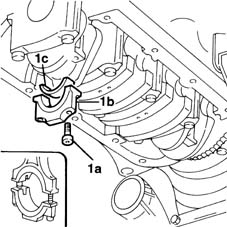
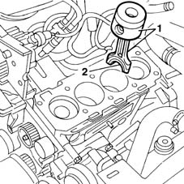
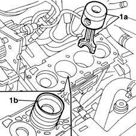

1028H12 set of pistons with connecting rods - r r with cylinder head/s removed
- Path
- Procedures > 10 ENGINE UNIT > 1028 PISTONS AND CONNECTING RODS > 1028H pistons and connecting rods > 1028H12 set of pistons with connecting rods - r r with cylinder head/s removed
- Kind
- repair procedure (removal / refitting; the operation number is the code)
- Applies to
- engines: 1.9 JTD 8V; all production periods
- Interactive page
- https://sloeber94.github.io/elrnDB-fMltpl/en/#/2891364
Applies to: engines: 1.9 JTD 8V; all production periods
 Removing
Removing
 Refitting
Refitting1084A16 oil dip stick pipe - r r
1076B50 exhaust pipe attachment to engine - r + r
1020A20 crank case oil sump - r + r clean seals for sealant application
1. Undo bolts (1a) and remove big end bearing cap (1b). then remove big end half-bearing (1c).

Applies to: engines: 1.9 JTD 8V; all production periods
Lower the vehicle.
1. Remove the connecting rod with the piston.
2. Remove the big end bearing shell.

Applies to: engines: 1.9 JTD 8V; all production periods
Refitting
Removing1. Fit the connecting rod - piston assembly and half-bearing (1a) using tool (1b).

Applies to: engines: 1.9 JTD 8V; all production periods
Fit the big end half-bearing and tighten the cap bolts to torque.
 | Fastening | Component | Ø | Value (daNm) |
|---|---|---|---|---|
- | Bolt | CONNECTING ROD CAP FASTENERS | M9 | 2.5 + 60° |
1020A20 crank case oil sump - r + r clean seals for sealant application
Topics linked from this page (3)
- 1020A20 crank case oil sump - r + r clean seals for sealant application
- 1076B50 exhaust pipe attachment to engine - r + r
- 1084A16 oil dip stick pipe - r r